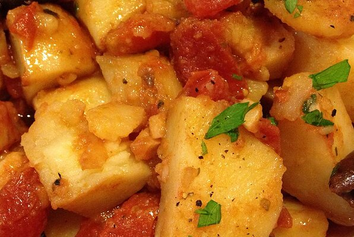

Greek Potato Stew

A delicious stew. It's ripe with the flavors of Greece!
Ingredients
- 2 ½ pounds potatoes, peeled and cubed
- ⅓ cup olive oil
- 2 cloves garlic, minced
- ¾ cup whole, pitted kalamata olives
- 1 ⅓ cups chopped tomatoes
- 1 teaspoon dried oregano
- salt and pepper to taste
Directions
- In a large saute pan, heat the oil over medium heat. Add the potatoes and stir. Stir in the garlic.
- Add the olives and cook and stir for several minutes. Stir in the tomatoes, and oregano.
- Reduce heat, cover and simmer for 30 minutes or until potatoes are tender.
- Season to taste with salt and pepper.
Return to Main Page